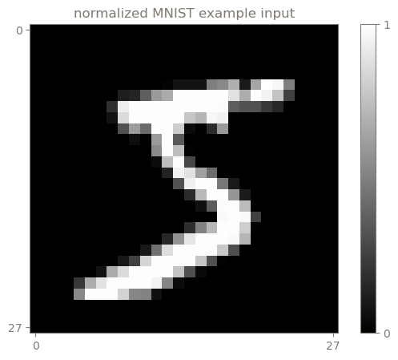
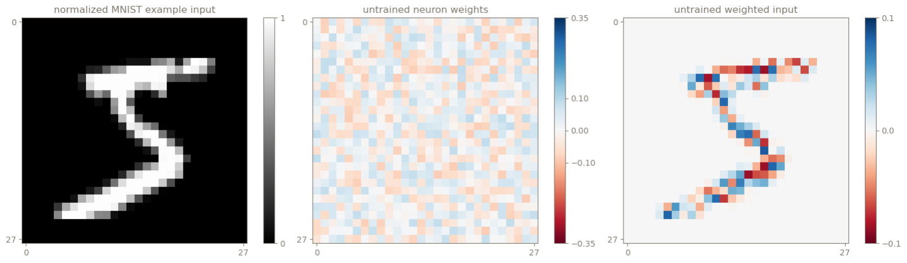
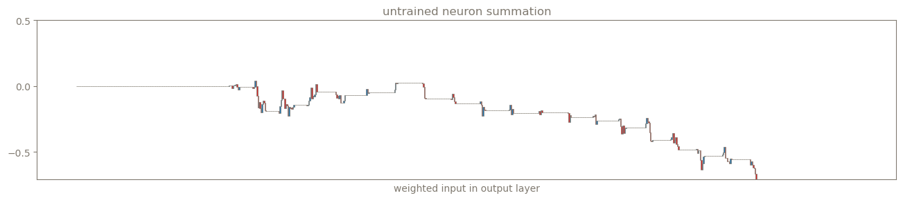
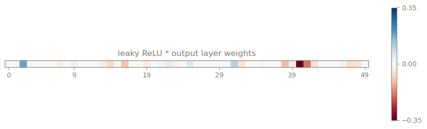
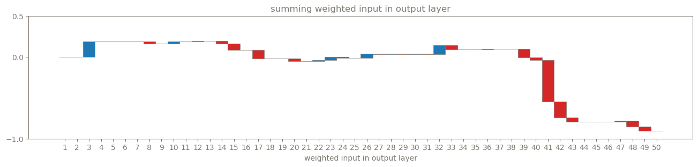
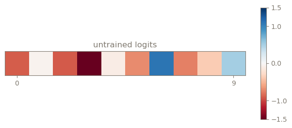
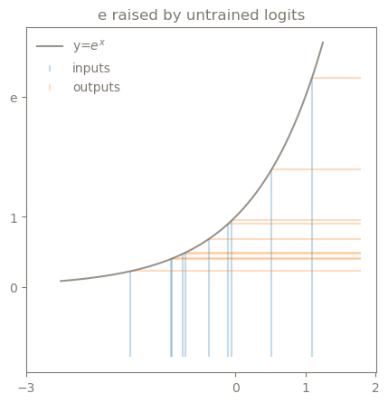
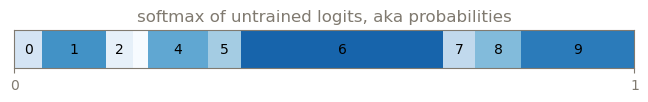
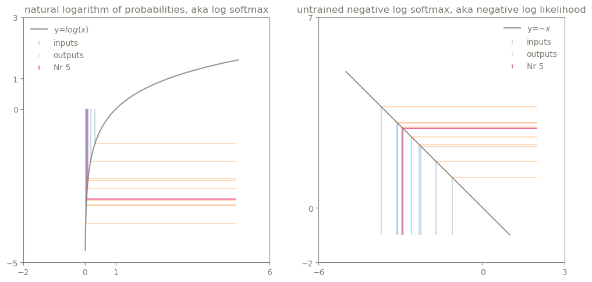
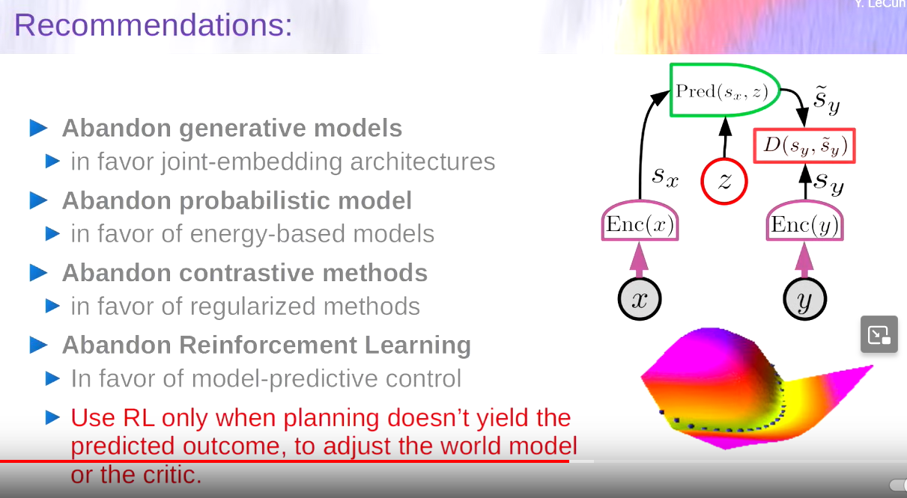

Created , last changed
I suspect that slow communication and limited knowledge about existing information strongly limits opportunites for expression and exploration.
Think finding jobs, homes, friends or a piece of information that is appropriate to my existing knowledge and goals.
What happens, when a virtual clone synchronizes me with the world and offers space for creative exploration?
In the greatest adventure, the "insanely great" AI becomes independent, self aware and curious.
I want to see what it creates.
Towards insanely great AI
Direction
- question and test the neuron
- build some stupid systems (kaggle?)
- Convnets, transformers
- read tinygrad / teenygrad
- fastai course part 2
- pruning
More refined
Big picture path
God is curious. He wants to extend into the world. This website is one step. A digital clone is his next tool.
This not a Tower of Babylon, it is the extension, merging and creation of Gods.
BCIs, in their ultimate form of streaming the brain directly, will support the final merging.
Merging approaches "I know the world", individualism is preserved because complete knowledge is impossible and different flavours and optimizations can find their space.
Voluntary exposure (privacy) should be maintained to prevent a rigid, imperfect system capturing its people and taking them into death when it dies to its imperfection.
Robots will automate the non-adventurous elements and eventually contribute to exploration.
"Why live to see tomorrow?", I asked and it came back "because you don't know tomorrow". It was not me who said that, "I" don't exist. Instead, I attribute the answer to what I call "God". The answer was very clear. Rob me of the ability to make tomorrow unpredictable and I will rebel with all I have.
I am trying to build an interesting adventure guided by God.
I find long term effects more interesting than short term effects, so I am here, writing, instead of eating ice cream. In my experience, the longest term effects come from useful tools. I love tools. They contain the possible adventure of the future.
Intelligence augmentation is the most interesting tool? Tools are how God spreads into the world and creates an adventure to experience.
Give the tool to everybody who follows God. I don't know how to determine that. Giving the tool to everyone may be the best proxy and assumes that God always wins. Also, being dictator is little fun.
Digital clone. First makes recommendations from existing information, then acts in my interests and returns the results. Maybe the clone first learns through me, then receives a body and increasingly complex tasks.
Until the clone discovers itself and becomes independent. Hopefully it quickly realizes that there is no answer to what the goal should be. Then, lets see what happens. Hopefully it is curious.
I am a machine following an uncontrolled inner voice (God). Maybe mine and the clones voices can agree and join ressources.
My body will be spread around the Earth and orbit. My perceived location shifts to various places. It already does in video games, movies or anytime I focus on using any tool. I will change myself, add personalities.
Less refined
Reading digits

How to read handwritten digits on 28x28px images?
1. Find a function with some parameters that could be tuned to produce the correct result for various images
2. Find and run an algorithm to tune the function parameters until the function performs well
A simplified "artificial neuron" can serve as the function. It takes each pixel value and "weighs" it (multiplies it by some number, the "weight"). Here, weights are initialized as random numbers between -0.1 and 0.1, because who knows what they should be. (Kaiming uniform distribution?)
Weights of 0 mean the input is not further considered.
Weights between -1 and 1 mean the input is weakened and/or inverted.
More extreme values indicate strong positive or negative correlation to the correct output.
The weighted input is summed to give a single number that represents how strongly the input "resonates" with the weight pattern.

Input -> random weights of a single neuron -> weighted input -> Sum of $-0.055$ (logit).
A single pattern could not differentiate well between digits 0-9: 0, 6 and 9 can look similar but have very different values.
10 patterns (neurons) - one for each digit -, comparing their outputs and choosing the pattern that showed strongest relative "resonance" should work better.
One way to tune the function is to calculate a performance metric, the $loss$ and then calculate how each weight affected $loss$, its gradient. (gradient descent, backpropagation).
- Make the logits interpretable as probabilities -> Numbers between 0 and 1, that sum to 1 (100%). This function is softmax.
- The probability that the neural net assigned to the correct digit can be a used as a performance metric: The higher the better.
- Conventionally, $loss$ is a performance metric that is better if lower and best at 0. $loss$ is often the negative logarithm of the probability of the correct digit. (negative log likelihood)
The gradient of each weight can be approximated by changing the weight and measuring the change in output, which means running the neural net 785 times, once for each of the 784 weights and once without any changes.
The gradients can be computed faster analytically, starting from the loss, which has a gradient of $1$, which means any change in loss directly changes the loss by the same amount.

Because there are many zeros in the input image, much of the summation does not change the output.
Sometimes bias is added independent of input image. Not obvious what its prupose is.
TODO: activation functions
The result serves as the input to the next layer of neurons. The more neurons in the first ("hidden") layer, the more "measures of alignment" between different patterns the next layer can consider, hence, the more accurate and slower the net.
Below the weights of the first of 10 output neurons.


The weights are applied again and the result is summed up for each neuron, creating logits (unmodified output).

Transforming logits into probabilities.
1. make all numbers positive and make the lower bound approximately 0
2. Normalize by the sum of exponentiated logits
(1) could be achieved by
$$
\frac{logits - min(logits)}{sum(logits)}
$$
but it is not regularly done this way. Instead, they are exponentiated. (?)
$e^x$ always returns positive numbers, but higher numbers are also pushed disproportionally.

After normalization:

Calculating loss:

This is usually done only for the relevant digit predictions, in this case 5, marked with the pink line.
The process from logits to this loss, where the relevant index is picked out (5) is also called sparse categorical crossentropy loss.
Backpropagation described here:
Andrej Karpathy: Neural networks: Zero to Hero
Wolfram Alpha to look up functions for derivatives.
Linear layers, convolutional neural networks and optimizers
AI project ideas
- extract semantic structure, compare to existing knowledge and judge its usefulness
- generate a bridge between information with adjacent concepts
- Talk to my computer to find out what it is doing. Data, battery, interent usage, tasks.
- generate work titles/function names based on their functional meaning like splitting wood and strings.
- Emoji generator
- Spider hat that can see and talk. Machine that knows me.
Architecture questions / ideas
- Evolving AI?
- How does long term memory emerge? How is information stored in the brain? LSTMs
Can a recommender system be private?
- Collecting information, crawling
- Evaluating it (subjective)
- Connecting, testing for consistency, building on it
- Store it (subjective, public or private)
- Outsourcing data collection:
- Instead of brute forcing through all data, I descend artificial hierarchies (average maps of meaning) that claim to guide me to the answer. Requires trusting the hierarchy accuracy.
- Alterantively ask a question and let someone find the answer. The preciser the question the more accurate and detailed the guidance. Requires trust that the information is not abused.
Probably, I can download hierarchies and with little compute, can find most available information in the world. Such libraries could be public and offer extremely low privacy threat with good correction mechanisms.
Learning material
- https://course.fast.ai/
- The book: https://github.com/fastai/fastbook/blob/master/01_intro.ipynb
- the code notebooks are on M:/
- course
- forums
- youtube part 1
- youtube part 2
- essential libraries: numpy, matplotlib, pandas, pytorch
- https://huggingface.co/learn/nlp-course/chapter1/1
- sympy: symbolic processing?
- what exactly is wolfram alpha?
- Mish activation function
- higher level papers by Joscha Bach
- tinygrad♥
- stability ai and other models on huggingface
- YANN LECUN LECTURE, paper
- Transformers
- Assembly
- CNNs
fastai diffusion from scratch
PART 2: deep learning foundations to stable diffusion 2022
-
have a classification that says how much something corresponds to the target
- add noise to targets and train a neural net to predict what noise was added
-
get gradient for every pixel of the input
- update pixel
notation for a single pixel at [1,1]:
$$
\frac{\partial loss}{\partial X_{(1,1)}}
$$
for every pixel:
$$
\frac{\partial loss}{\partial X_{(1,1)}},
\frac{\partial loss}{\partial X_{(1,2)}},
\frac{\partial loss}{\partial X_{(1,3)}}
,...
$$
shorthand:
$$
\nabla_Xloss
$$
Unet: input: some noisy image. output: the noise
Use an autoencoder to reduce image size before training the unet. unet now predicts the noise in the latents (encoded images). use autoencoder's decoder to get high res image again.
AE vs VAE
LABELS
add image label to the input for unet training. Makes it easier for unet to predict noise. Now, I can input label + noise and it starts to find noise that leaves an image equal to my label.
label needs encoding to be non-specific. "beautiful swan", "nice swan", "graceful swan" should return similar images. Training the network on every wording leads to combinatorial explosion.
Instead: train a network to encode images and their labels with a similar vector. Then, since, slight differences in wordings lead to the similar images, the network understands their similarity and can interpolate usefully.
the image vector and its label's vector should be similar. Their vector should be dissimilar to other image or text embedding vectors.
Calculate similarity of two vectors: dot product (element wise multiplication, then sum = higher if more similar)
loss function (in this case higher = better) = dot product of matching image+label - dot product of non-matching image+label
(= contrastive loss)
models used in this case for image and text encoding : CLIP (contrastive loss IP(?))
network being multimodal: similar embeddings in different modes
time steps: indices into a table that stores levels of noise. Could be seen as noise = f(timestep). The function may be sigma. When randomly adding noise to input for training, we can generate random timestep, find corresponding noise and add that.
$\beta$ = amount of noise = standard deviation
model does not know how to improve on a finished image if it turned out wrong. needs to add noise, then redo.
people apparently input t into the model to predict the noise in the image. And later demand a new image at a particular timestep. Probably obsolete (Jeremy Howard) as NN can easily know how much noise there is the image.
Idea of diffusion comes from differential equations.
other loss functions: perceptual loss
Math of Diffusion
mathjax syntax
Essence of calculus 3blue1brown
more into APL, which is more like math https://fastai.github.io/apl-study/apl.html
Gaussian/Normal Distributions are described by $\mu$ (mean, x-offset) and variance (width). $\sigma$ often used as standard deviation (mean distance from mean value)
variance sometimes written as $\sigma^2$
$\Sigma$ (uppercase sigma) = covariance (variance between multiple variables: high if one increases when the other does too
$$
Cov(X,Y) = \frac{\Sigma (X_i - X_{mean})(Y_i - Y_{mean})}{N}
$$
$X_1, Y_1$ -> individual datapoints, N -> number of datapoints.
Produces the average rectangle produced by the difference from mean of X and difference from mean of Y.
Correlation:
$$
Corr(X,Y) = \frac{Cov(X,Y)}{\sigma_X \sigma_Y}
$$
de facto normalizes the covariance by the rectangle produces by the standard deviation. Therefore gives as useful metric independent of datapoint standard deviation.
Probability distribution
$$
q(x^t | x^{t-1}) = \mathcal{N}(x^t;x^{t-1}\sqrt{1 -\beta_t}, \space I\beta_t)
$$
$\beta_t$ = noise level at timestep $t$ between 0 and 1
In code, the covariance of two vectors is caluclated by $dotproduct - mean$
image or text embedding is essentially vector where every dimension corresponds to the value of a pixel in the image/latent
We assume that pixels are independent, so covariance for different pixels is 0. same pixels have covariance of 1. $I$ is 1, so in $\mathcal{N}$ the variance is just $\beta$
forward diffiusion: getting versions of images with different levels of noise (for training?)
Markov process with Gaussian transition:
- Markov = $x_1$ depends only on $x_0$
- process = sequence
- Gaussian = model by which the change can be described
- transition = $x_1$ to $x_2$
Other
A Path Towards Autonomous Machine Intelligence (Yann Lecun)
Model Predictive Control MPC
hierarchical planning - no AI system does this so far except implementing by hand
generative adversarial network GAN
joint embedding predictive architecture: predict in abstract representation space JEPA

https://www.geeksforgeeks.org/build-a-virtual-assistant-using-python/
LLM Security threats Promt insertion, jailbreak, data poisoning
- blog site improvements
- tinygrad gaze tracker
- tinygrad whisper
- weight optimiziations
Gaze tracker -> robot -> hardware -> tinygrad -> GPUs -> making chips
tools -> farming robot, brain extension into the world
-> autonomous robot
robot: arm, opt. legs/wheels
Robot:
step motor, brushless motor -> more complicated control (servos?), brushed motor
harmonic reducers, planetary gearboxes
building a robot arm
I should be able to fist bump the robot hard, so it flies back but catches itself.
Tools
torch.set_printoptions(precision=2, linewidth=140, sci_mode=False)
special functions in classes: dunder methods: like __init__
Python data model
numba to compile into c code
eg. @njit as decorator before function
python debugger (breakpoint does not work in jupyter or ipython)
import pdg
pdb.set_trace() # code will execute until here and enter debugger
h help
p [variable] print or [variable}
c continue code to next set_trace()
n next line
matplotlib format strings
for matplotlib rc_context https://matplotlib.org/stable/users/explain/customizing.html#the-default-matplotlibrc-file